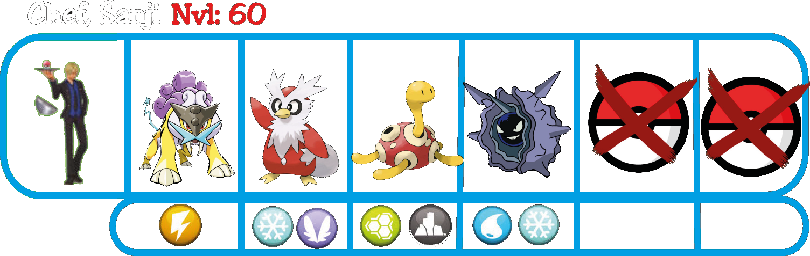
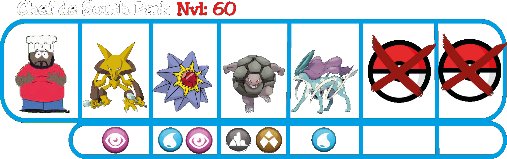
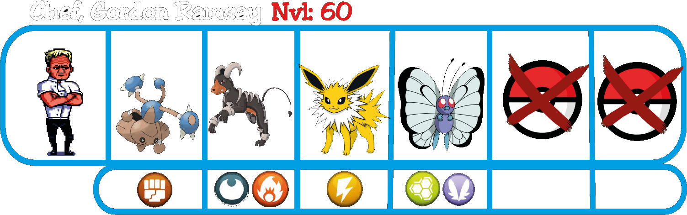

Pueblo Torrijas
Al entrar en Pueblo Torrijas, el nível límite volverá a aumentar hasta el 60. En este pueblo encontrarás cosas muy interesantes, por ejemplo.
En esta casa encontrarás una científica dispuesta a dejarte probar un suero para convertir un Pokemoito en su versión Shiny.
En esta otra casa encontrarás a Rojito, es un entrenador con un Pokemoito Legendario, dispuesto a intercambiarlo por otro que esté a la altura.
A diferencia de otras zonas, en esta priorizaremos el Gimnasio Torrijas, porque después de derrotar al líder ocurrirá un evento.
Gimnasio Torrijas
En este gimnasio encontrarás a Goku, pero no aceptará tu desafío hasta que le lleves algo de carne, que conseguirás derrotando a los Chefs que están en su cocina.
   Tras derrotar a los tres Chefs y conseguir las carnes, podrás desafiar al líder del gimnasio. Cuando le derrotes te dará como recompensa una Bola de dragón de 4 estrellas. Esa bola tendrá la fuerza de Goku imbuida, lo que hará que puedas empujar rocas pesadas.
Si reunes 7 bolas de dragón, podrás pedir un deseo. Puedes ver el lugar exacto en el que están las otras 6, haciendo click aquí
Cuando salgas del Gimnasio Torrijas, escucharás una conversación entre miembros del Team Rocket, hablarán de un escondite secreto que se encuentra en el segundo piso del centro comercial, deberás ir a investigar pero antes deberías explorar un par de rutas y la Zona Safari.